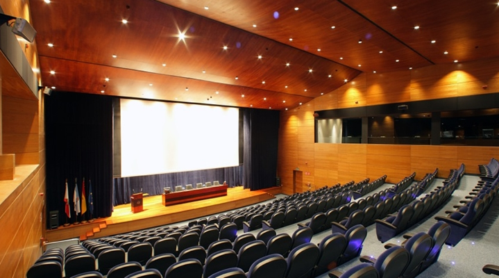

Pulpo Con es una conferencia que se celebró en Vigo el 7 de Septiembre de 2019 que acercó el movimiento “crafter” y el “clean code” a la comunidad de desarrolladores de Galicia y su área de influencia.
Técnicas, arquitecturas y modelos que fomentan mejores profesionales más allá del lenguaje utilizado.
Con reconocidos ponentes de gran prestigio nacional e internacional.
Síguenos y te mantendremos informado de próximas ediciones
Videos del evento
Si has asistido al evento habrás recibido un email con la contraseña necesaria para ver todos los videos privados.
Ver videosPonentes
Carlos Buenosvinos Zamora
CTO @ SEAT / ex VP of Technology @ XING / ex CTO @ Atrápalo
Como vicepresidente tecnológico de Xing y responsable de su oficina en España, lidera técnicamente dos unidades de negocio (B2B y B2C) con un total de 75 profesionales.
Organizador de múltiples eventos (como la Barcelona PHP y la DevOps Conference), es el creador de Ansistrano, utilidad basada en Ansible para desplegar aplicaciones.
Ha impartido ponencias en las mayores conferencias de PHP por todo el mundo, es autor del libro “Domain-Driven Design in PHP”, que se ha convertido en uno de los manuales por excelencia sobre la implantación de DDD en entornos PHP además del traductor oficial al español del libro “Domain-Driven Design Distilled” de Vaughn Vernon.

Javier Ferrer González
CEO de CodelyTV y Profesor en la universidad La Salle BCN
Tras una larga trayectoria como desarrollador de software en startups y empresas como Uvinum o LetGo, crea CodelyTV: canal de youtube donde a través de entrevistas y vídeos sobre desarrollo de software ayuda a miles de profesionales a ser mejores aplicando principios SOLID, testing, Arquitectura Hexagonal, CQRS, DDD, etc.
Actualmente compagina sus labores de divulgador con las de profesor, trainer y asesor de equipos de desarrollo


Rafa Gómez Casas
Backend Software Architect en letgo y profesor en la universidad La Salle BCN y CodelyTV
Especializado en la creación de soluciones de alta disponibilidad y rendimiento a través de la implantación de arquitecturas limpias, cuando no se encuentra “despedazando” monolitos en microservicios ricos en SOLID y rigor se deja caer por CodelyTV dónde ayuda a miles de programadores a ser mejores profesionales explicado técnicas de desacoplamiento, SOLID, testing, Arquitectura Hexagonal, CQRS, DDD, etc.
Mavi Jimenez
Software Developer @ Holaluz / ex Project Lead @ Trovit
Ya desde sus inicios como programadora en COBOL se interesó por hacer las cosas de otra manera. Mientras se adentraba en el mundo del testing se graduó en Bellas Artes; entre dibujo y dibujo ejerció como tech lead en Trovit, abrazando poco a poco el rigor hasta que, de forma natural, acabó en Holaluz, dónde continúa aplicando el rigor y los principios SOLID tanto a las aplicaciones como a los test.
Isabel Garrido
Senior Backend Developer @ Letgo / ex Developer @ Bq
Desarrolladora especializada en backend, compagina su vida laboral con la colaboración con proyectos sobre el bienestar animal (protectoras, educación canina...) y con las clases que imparte sobre testing en un máster.
Comprometida con la diversidad en el mundo tecnológico, fue mentora de una alumna de Adalab y forma parte del comité de diversidad en Letgo.
Comenzó su carrera profesional en BQ y tras realizar tareas tanto de backend como frontend en varias empresas, actualmente ejerce como PHP Senior Backend Developer en Letgo
Jose Armesto
Software Engineer, ex CloudBees Schibsted y Softonic
Desarrollador creyente en las técnicas de extreme programming, y siempre con un pie en la enseñanza. Tras pasar muchos años como programador, se ha pasado los últimos años en cosas más relacionadas con la infrastructura de las empresas para las que ha trabajado.
Rolando Caldas
Analista Programador @ Altia / ex CTO @ Roi Scroll
Entró en el mundo de la programación creando la comunidad TruZone y sus proyectos de software libre NukeET y DedalusCMS y llegando a ser CTO de las agencias de marketing digital Interacción CIM y Roi Scroll.
Actualmente ejerce de Analista Programador en Altia dónde aplica los principios SOLID y las arquitecturas limpias sobre Symfony.
Compagina su trabajo con la organización de PHPVigo, el Máster de Dirección de Arte en Publicidad donde es profesor y la realización de charlas y talleres para acercar el mundo laboral al mundo educativo a través del programa AltiaTechDay.
Ubicación
Auditorio Sede Afundación Vigo
c/ Policarpo Sanz, 24 - 26, Vigo. 36202, Pontevedra




- Autobús urbano
Líneas: C3, CAC, C7, L11, 12B, C4A, C5A, C4B, L8, C5B, 12A, C9A. L17, C9A, C15C. Calcular ruta


Programa
|
09:00 10:00 | Badge pickup & Desayuno |
|
10:00 10:10 | Apertura |
|
10:10 10:50 | Mi aplicación es un monolito… ¡y qué!Rolando Caldas |
|
11:00 11:50 | Dobles de acción para testingIsabel Garrido |
|
12:00 12:30 | Descanso |
|
12:30 13:20 | Kubernetes no es solo una herramienta de despliegue, es una plataformaJose Armesto |
|
13:30 14:20 | Elige tu propia aventura: Pasito a Pasito Driven DevelopmentJavier Ferrer & Rafa Gómez |
|
14:30 16:00 | Comida |
|
16:00 16:50 | Be SMART my testsMavi Jimenez |
|
17:00 17:50 | Eventos, Mensajería y otras fábulasCarlos Buenosvinos |
| 18:00 | Clausura |


Colaboran